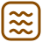

O SpecWeave organiza o trabalho em incrementos, com critérios de aceite e tarefas rastreados. O fluxo inclui passagem de bastão, verificação e revisão. O CLI é gratuito e a licença informada na fonte é MIT.
Projeto_Exemplo: este tutorial usa o projeto “Lista de Tarefas”, o mesmo dos tutoriais das outras ferramentas, para que você possa comparar os fluxos.
A instalação usa o npm, então ele precisa estar disponível no computador. A fonte lista estes agentes: Claude Code, Codex, Cursor, Gemini CLI, GitHub Copilot CLI, Grok, OpenCode, Muse Code, Antigravity e Pi.
O ciclo do SpecWeave
Depois de criar o incremento, o ciclo tem sete etapas: assumir a tarefa, concluí-la, passar o bastão, retomar, verificar, revisar e completar.
Ciclo do SpecWeave: da tarefa assumida ao incremento completado.
Cada etapa deixa registros na pasta do incremento, que você pode revisar antes de seguir.
Assumir tarefa Registra no ledger.jsonl que você assumiu a tarefa T-01.
Concluir tarefa Roda o teste informado em --run ao concluir.
Passar o bastão Gera o handoff.md para quem continuar.
Retomar Quem continua retoma o trabalho a partir do bastão.
Verificar Gera os relatórios verify.md e verify.json.
Revisar Gera um relatório de revisão, como review-codex.md.
Completar Fecha o incremento.
Instalação e passo a passo
Siga os dez passos, na ordem, usando o botão Próximo. Cada comando tem um botão para copiar.
Instalar o CLI
npm install -g specweave
Inicializar o projeto
specweave init
Criar o incremento
Cria .specweave/increments/0001-<nome>/. Descreva o Projeto_Exemplo “Lista de Tarefas” no título.
specweave create-increment "<título>"
Assumir uma tarefa
specweave task claim T-01
Concluir a tarefa com teste
specweave task done T-01 --run "npm test"
Passar o bastão
specweave handoff
Retomar o trabalho
specweave pickup
Verificar
specweave verify
Revisar
specweave review
Completar o incremento
Para ajustes pequenos, use specweave small-fix "<motivo>" em vez de um incremento.
specweave complete
Resultado esperado
Depois de criar o incremento e percorrer o ciclo, a pasta .specweave/ fica com esta estrutura. Em spec.md, os critérios de aceite têm o formato - [ ] AC-01: e as tarefas começam com ### T-01.
.specweave/
increments/
0001-<nome>/
spec.md
ledger.jsonl
handoff.md
reports/
task-T-02.txt
verify.md
verify.json
review-codex.md
memory/
MEMORY.md
Ilustrativo Estrutura conforme a fonte oficial; <nome> é o nome do incremento.
Solução de problemas comuns
O comando specweave não é encontrado: confira se a instalação com npm install -g specweave terminou sem erro.
O ajuste é pequeno demais para um incremento: use specweave small-fix "<motivo>".
Outros erros: consulte a fonte oficial, que não lista outros problemas conhecidos na consulta feita.
Cartão comparativo

SpecWeave
Incrementos com critérios de aceite e tarefas rastreados, com passagem de bastão, verificação e revisão.
Instalação
npm install -g specweave
Agentes suportados
Claude Code, Codex, Cursor, Gemini CLI, GitHub Copilot CLI, Grok, OpenCode, Muse Code, Antigravity, Pi